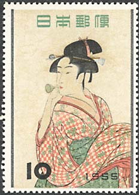
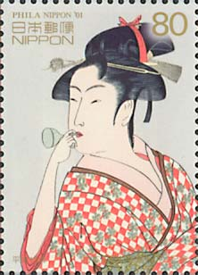
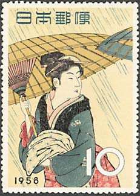
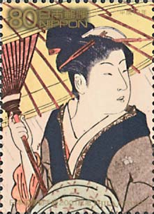

|
 |
|
|
The Japan World Stamp Exhibition PHILANIPPON '01, Tokyo, August 1st to 7th, was an unique occasion for the Japanese postal administration to have a look back at its past that is marked by wonderful reproductions of art. The most interesting of them present the treasures of the woodblock print, a technique known under the name of Ukiyo-e. Nicely issued in big formats (a true revolution of the 1950s), these stamps also fully deserve the name of "beauties", a fact that the "expanding" title of this page tries to emphasize.
The first stamp, issued in a new big format that will be maintained during many years, was the reproduction of the work of the great Ukiyo-e artist Kitagawa Utamaro (1753 - 1806), "A Girl Whistling a Vidro" (known also as "A Girl Blowing Glass Toy"). The day of issue was Nov. 1, 1955, the 150th anniversary of the artist and the beginning of the series "Philatelic Week".
|
|
 Since 1791 Utamaro concentrated his work on single portraits of women. He took his models from the street or from the pleasure-district Yoshiwara. The stories of his love affairs with the ladies of the "licensed quarters" are said to be abundant. Two years later, in 1793, Utamaro received wide-spread fame and recognition as a result of a new series of women prints. In 1804 Utamaro got into serious trouble with the authorities for violation of censorship laws. He had published a print with a historic scene showing a ruler with his wife and five concubines. This was considered as an offense against the ruling Shogunate of the Tokugawa family. The artist was briefly imprisoned and to some sources sentenced to wearing hand-cuffs for 50 days. According to other sources, it was an iron collar he was forced to wear. Whatever the detailed circumstances may have been, this humiliation had a devastating impact on him. He fell into deep depressions and died two years later at the age of 53 in Edo. Japanese woodblock prints of the classical Edo period were imported to Europe in large numbers in the late nineteenth century. (Source: http://www.artelino.com/articles/utamaro.asp). |
The same print of Utamaro appeared on the miniature sheet PHILANIPPON '01. We show it below, the first on the left.
 |
 |
 |
The above stamp, in the middle, appeared on Apr. 20, 1958 (Scott 646), as part of the Stamp Week series. It reproduces an Ukiyo-e by Torii Kiyonara, entitled Fuzoku Higashino Nishki, Returning from a bathhouse in the rain. On its right we present the same print, issued as part of the PHILANIPPON '01 sheet.

We have displayed so far, on three consecutive pages, all the "Looking Back" stamps from the first row of the above miniature sheet. The stamps from the second row show prints of the one single painter, probably the most special of all, Toshusai Sharaku, whom we dedicated the next and last page.
Some data referring to the perforated miniature sheet:
Size of impression 38.5 * 28.0 mm
Sheet composition 10 (50 yen stamp * 5 + 80 yen stamp * 5)
Printing process Six-color photogravure
Layout Morita Motoharu (Art Officer)

Some data referring to the self-adhesive miniature sheet:
Size of impression 38.5 * 28.0 mm
Sheet composition 10 (50 yen stamp * 5 + 80 yen stamp * 5)
Printing process Eight-color photogravure
Layout Morita Motoharu (Art Officer, public service designer)
Links to pages on this site, dedicated to the Japanese stamps:
Looking Back at Beauty - 3 (Toshusai Sharaku)
Looking Back at Beauty - 1 ((Kunimasa Utagawa, Toyokuni Utagawa)
| Published:
07/24/2004. Revised:
12/18/04. Copyright © 2004 by Victor Manta, Switzerland. All rights reserved worldwide. |
|